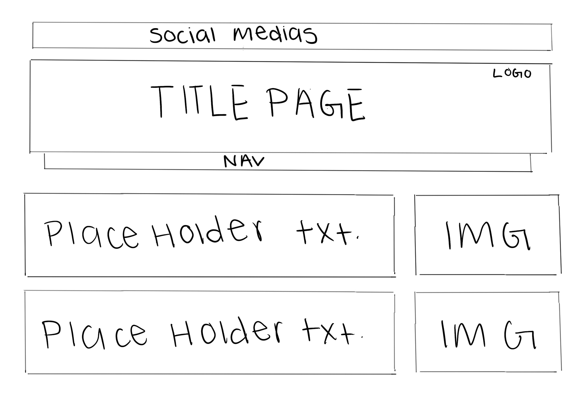
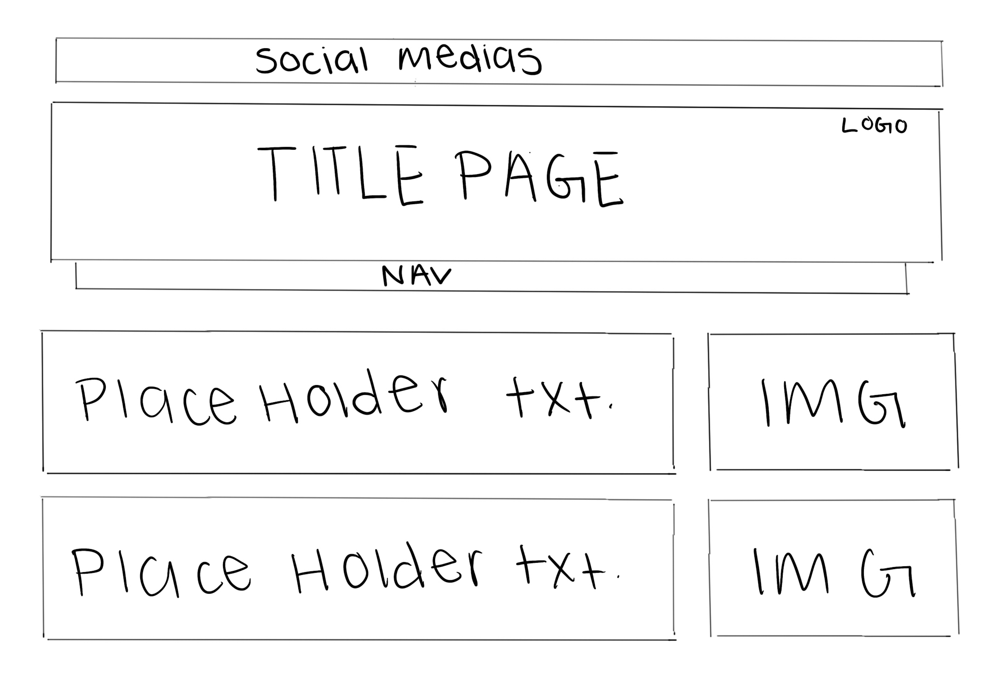
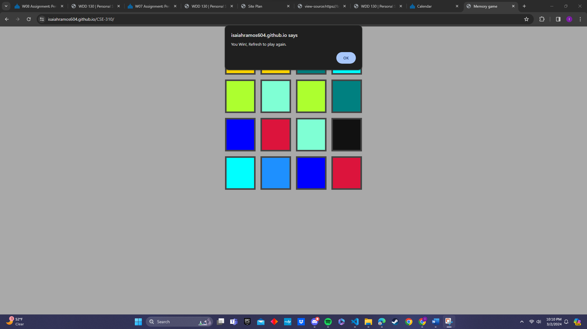

Overview
Purpose
I am here to list what i am able to do, projects i am currently working on, and anything else that may attract a potential employer.
Audience
My main audience are businesses and potential employers looking to hire a software engineer. I am looking to work as a backend developer and am always improving and growing.
Branding
Website Logo
Style Guide
Color Palette
Palette URL:
https://coolors.co/eaebed-006989-0731a5-030303-171738| 006989 | 0731a5 | 030303 | 171738 |
|---|---|---|---|
| 006989 | a3bac3 | 030303 | 171738 |
Typography
Heading Font: Roboto
Paragraph Font: Roboto
Normal paragraph example
Im isaiah Ramos and i love i am a aspiring software engineer! This has always been a passion of mine and im here to give you the best quality work! This website is here in order to show what i am capable of and i plan to develop and make it better through time. Let me show you all there is to know about what i bring to the
Colored paragraph example
My coverage of code so far is python, HTML, and C#. I plan to learn more code such as javascript.. On my free time i research into ways i can improve and become a better coder. Theres so many coding languages out there it keeps this all fresh and new to me. ill make sure to learn what ever is necessary and also what is not.
Navigation
Site Map
Wireframes
Home


 

[Page 2]
Content
Home page
In an everchanging world full of technology and innovation, it is important to keep a strong online presence so that you are able to showcase your talents and advertise your skill. For developers looking to break into the tech industry, having an online resume with some of your best projects to showcase is vital. This platform is to showcase my portfolio, allowing anyone interested to see what I can bring to the table and offer to their team and or company. In todays competitive job market, being able to make yourself stand out is essential. A traditional paper resume doesn’t always showcase a persons full capabilities, but an online professional resume on a website can give anyone a good review. I will leave some of my best projects for employers and companies looking to recruit me, and the reason my sight will be so captivating is due to it having human characteristics as well as my own personal touches. Any resume will tell you what you can do and how long you have done said job/skill, however, what if I can make it more fun to the mind, instead of boring black and white text, what if I added more colors to attract your attention, what if I showed you and let you use what I have actually done already. This is how I plan to get and keep an employers attention rather than just your boring everyday resume.
Images for the Home page


Apps
This page is to showcase the two different apps i had developed while learning app development. They are to do task with differentiating interfaces to add variety for users.
App Development

JavaScript Game
This page is to showcase the memory game i had created after learning javascript.
Images for the Page 3

Wireframes
Create three wireframes for your site. One for each page and list them here
Home
[Any additional details about home that the wireframe does not make clear]
[Page 2]
[Any additional details about page 2 that the wireframe does not make clear]
[Page 3]
[Any additional details about page 3 that the wireframe does not make clear]